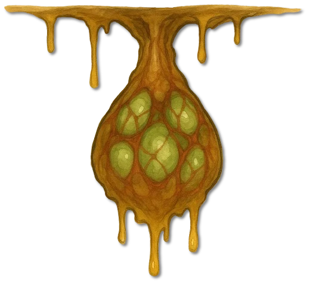
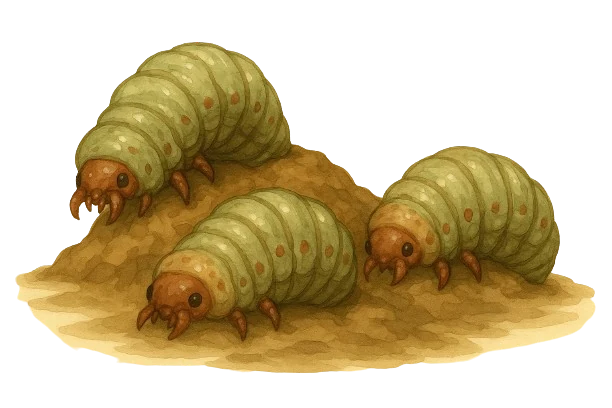
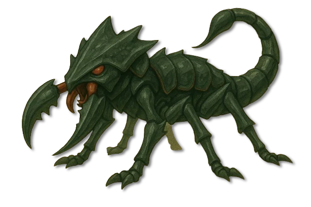
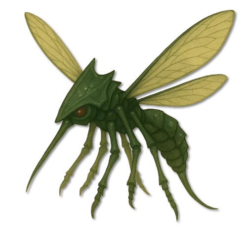
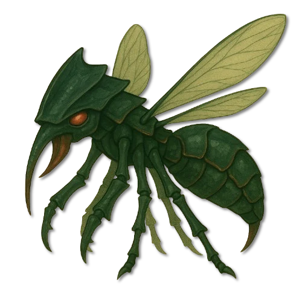
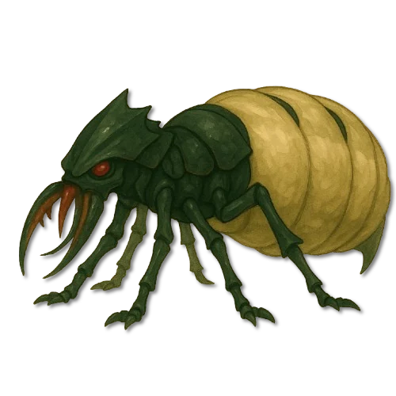

Brutkammern
Eier
Feucht gehaltene Eierbündel, die in Schleimnetzen an den Höhlendecken hängen.
Aleria · Gebirge und tiefe Höhlensysteme · Archivblatt I / VI
Insektoide Gattung · Schwarmorganismus
Große, insektoide Schwarmwesen, deren mineralgehärtete Panzer, verzweigte Tunnel und streng gegliederte Kasten das Innere ganzer Gebirge dauerhaft verändern.

„Wenn der Fels unter deinen Stiefeln summt, ist der Stollen längst nicht mehr deiner.“Warnspruch der Pickenden Spechte
Sechs Merkmale · Skala 1–10
Die Bewertung beschreibt eine aktive Kolonie. Einzelne Drohnen oder Larven erreichen deutlich geringere Gefahrenwerte.
Quelle der Einordnung: Aus Schwarmverhalten, Panzerung, Giftwirkung und den Berichten der Berggilden abgeleitet
Die sieben Stufen des Schwarms
Jede Kaste besitzt eine eigene Körperform und erfüllt einen festen Zweck. Die Bildtafeln zeigen sämtliche im alten Archiv benannten Entwicklungs- und Rangstufen.

Brutkammern
Feucht gehaltene Eierbündel, die in Schleimnetzen an den Höhlendecken hängen.

Brutkammern
Die junge Entwicklungsstufe wird von Drohnen versorgt und vor Pilzbefall geschützt.
Bau und Versorgung
Kräftige Arbeiter für Tunnelbau, Pflege, Transport und die Gewinnung von Mineralien.

Innere Verteidigung
Schwer gepanzerte Verteidiger mit kräftigen Mandibeln und langem Giftstachel.

Oberfläche und Randgänge
Bewegliche Späher, die Futterquellen und Gefahren über Pheromonspuren melden.

Pheromonhierarchie
Mittler zwischen Königin und Arbeiterkasten, die kleinere Schwarmteile koordinieren.

Tiefste Nestkammer
Das langlebige Zentrum der Kolonie und Ursprung sämtlicher neuer Kasten.
Kriecher, auch Höhlenkriecher genannt, sind große insektoide Lebewesen der Gebirge und unterirdischen Höhlensysteme. Ihre Gestalt erinnert an Ameisen, Wespen und Termiten, doch Größe und Spezialisierung reichen weit darüber hinaus. Je nach Kaste werden sie katzen- bis bärengroß.
Sie besitzen keine Fühler. Wärme, Gerüche und feine Pheromonsignale führen sie selbst durch völlige Finsternis. Die Wände ihrer verzweigten Bauten tragen ein feuchtes, schimmerndes Sekret, das Fortbewegung und Reviermarkierung unterstützt und zugleich die Gänge stabilisiert.
In den Bergen Morgorns werden Kriecher gefürchtet und genutzt. Ihre Tunnel erschließen Erzadern; Sekrete, Chitin und Gift sind begehrte Werkstoffe. Wo eine Kolonie erscheint, verändert sie die Tiefe dauerhaft.
Der robuste Körper ist von Chitin geschützt, das durch mineralreiche Nahrung gehärtet wird und eine mit Eisen vergleichbare Widerstandskraft erreichen kann. Drohnen und Krieger zerspalten mit ihren Mandibeln selbst hartes Gestein.
Krieger tragen zusätzlich einen langen, beweglichen Giftstachel. Das stark neurotoxische Gift lähmt und verflüssigt in hoher Dosis innere Organe. Gelähmte Beute wird ausgesaugt; aufbereitete Nahrung gelangt anschließend in die Futtersäcke des Schwarms.
Kundschafter sind kleiner und beweglicher. Ihr Rüssel nimmt Flüssigkeiten auf, ihre Flügel erlauben kurze Erkundungsflüge. Adlige besitzen kräftigere Körper, größere Flügel und eine besonders wirksame Pheromonkontrolle.
Die Schwarmkönigin bildet Ursprung und Zentrum der Kolonie. Ihr angeschwollener Hinterleib erzeugt Eierbündel, die in zähen Schleimnetzen an der Höhlendecke hängen und durch ein besonderes Sekret feucht und pilzfrei bleiben.
Kriecher benötigen mineralreiche, felsige Tiefenschichten mit hoher Luftfeuchtigkeit und gleichmäßiger Wärme. Kolonien wachsen in Kavernen, entlang von Lavaadern und in verlassenen Stollen, häufig nahe Eisen-, Kupfer- und Schwefelvorkommen.
Bekannte Populationen liegen in den Gebirgsketten von Morgorn, Aldrimar, Cenyr und Mathringen. Offene Ebenen und flache Regionen bieten ihnen weder Nahrung noch das beständige Höhlenklima, das Eier und Larven benötigen.
Die Pickenden Spechte und die Kieselkratzer nutzen abgestimmte Pheromonmischungen, Rauch und Schallimpulse, um Kolonien zu lenken. Da Kriecher Erzadern instinktiv aufsuchen, können ihre Gänge den späteren Bergbau vorbereiten.
Eier, Sekrete, Chitin und Gift werden in Handwerk, Alchemie und Medizin verarbeitet. Sekret dient als Bindemittel und Gleitstoff, Chitin für Panzerplatten und Werkzeuge, während gereinigte Giftbestandteile in Tränken und Gegengiften Verwendung finden.
Die Schwärme begrenzen zudem gefährliche Bergbewohner. Dieser Nutzen besteht jedoch nur, solange kundige Gilden ihre Ausbreitung überwachen und Wege zu Siedlungen geschlossen halten.
Die Gesellschaft folgt einer festen Arbeitsteilung. Einzelne Kriecher planen kaum selbstständig; im Verbund handelt die Kolonie wie ein zusammenhängender Organismus.
Fällt eine Königin, kann sich eine Adlige innerhalb weniger Tage körperlich verändern und ihre Rolle übernehmen. Zerstörte Gangabschnitte werden nach denselben chemischen Signalen unmittelbar repariert.
Eine aktive Kolonie lässt sich nicht durch einen gewöhnlichen Vorstoß bezwingen. Spezialisten unterbrechen mit dichtem Rauch, Räucherstoffen und Pheromonneutralisierern die Verständigung des Schwarms und zwingen ihn in einen Rückzugszustand.
Im Kampf gleiten Klingen und Pfeile häufig am mineralgehärteten Panzer ab. Verwundbar bleiben Beinansätze, Halsbereich und die weichen Verbindungen zwischen den Panzersegmenten.
An der Oberfläche erscheinen meist Kundschafter. Ihr Tod alarmiert über Geruchssignale die tieferen Kasten; ein scheinbar einzelnes Tier darf daher nie als isolierte Gefahr betrachtet werden.